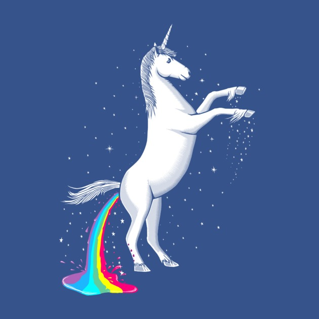
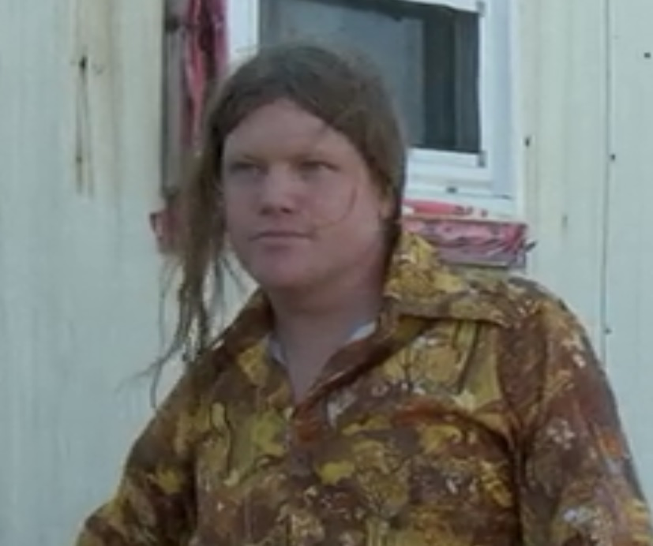

 Welcome to the Unicorn Spiritual Guidance Center. Here we pride ourselves in 24/7-365 customer service that surpasses our incompetent competitor Unicorn Luv. Feel free to explore our proffessionally designed, and Jeff endorsed multi-service web platform. Here you can discover a deeper connection with these majestic creatures, gain knowledge in unicorn care, and schedule an appointment at our world renowned love center. We are here to help you with any questions love driven or other wise, feel free to call us on our 24/7 hotline at (1-800hornpony).
Here at the Unicorn spiritual Gudiance Center our love for unicorns is deep and meaningful. At our love center we hope to provide visitors with a memorable and life-lasting experience. Feel free to book a visit under the love center button on our navigation bar.
Horn care and general grooming is an essential part to unicorn ownership. Here at the Unicorn Spiritual Guidance Center we pride ourselves in grade "A" unicorn care and maitinance. Feel free to double check our care level rating on our sisiter site "PETU.com" or as they are commonly refered to "The People For the Ethical Treatment of Unicorns". We also sell a wide selection of accessories and several grooming books to ensure all unicorns are loved and cared for at a grade "A" level.
Here is our head tamer and general manager Donald, feel free to contact him at anytime with any questions or concerns you may have.
Email-WELOVEHORNPONIES@sillyfairyland.com/Mobile Phone-1+(409)-222-2222)